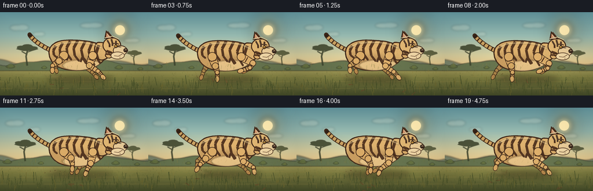
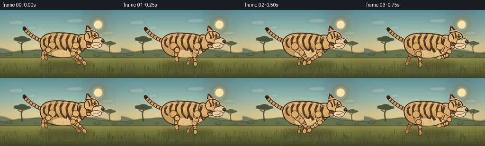
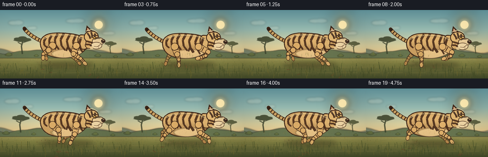
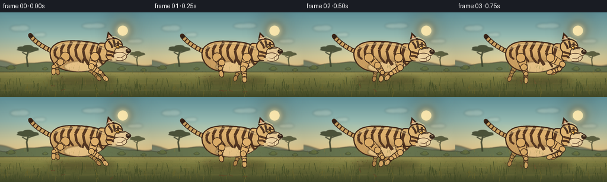
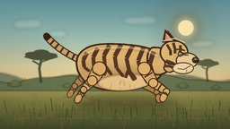
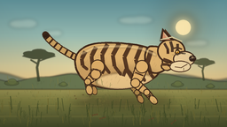
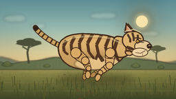

CODING AGENTS AS PIXEL WORLD MODELS
traex/DeepSeek-V4.1-Flash · instance_preservation_0007
点击播放 · 原生 RGB 像素
逐轮保存的候选
回放视频、检查图与代码变化。
每份候选均可单独播放。实际图片检查记录在下方工具轨迹中。
候选 01播放与检查图
点击播放 · 原生 RGB 像素


展开代码变化
--- 上一保存版本
+++ 本次保存版本
@@ -0,0 +1,740 @@
+from __future__ import annotations
+
+import math
+from pathlib import Path
+
+import cv2
+import numpy as np
+from PIL import Image, ImageDraw, ImageFilter
+
+import artifact_io
+
+
+W, H = 256, 144
+FPS = 4
+N_FRAMES = 20
+S = 4 # Supersampled canvas size for clean, small-screen vector edges.
+SW, SH = W * S, H * S
+
+
+def p(point):
+ return (int(round(point[0] * S)), int(round(point[1] * S)))
+
+
+def pts(points):
+ return [p(point) for point in points]
+
+
+def box(values):
+ return tuple(int(round(v * S)) for v in values)
+
+
+def rgba(color, alpha=255):
+ return tuple(color) + (alpha,)
+
+
+def draw_line(layer, points, fill, width=1, alpha=255, joint="curve"):
+ draw = ImageDraw.Draw(layer, "RGBA")
+ draw.line(pts(points), fill=rgba(fill, alpha), width=max(1, int(width * S)), joint=joint)
+
+
+def draw_ellipse(layer, bounds, fill, alpha=255, outline=None, width=1):
+ draw = ImageDraw.Draw(layer, "RGBA")
+ draw.ellipse(
+ box(bounds),
+ fill=rgba(fill, alpha),
+ outline=rgba(outline, alpha) if outline else None,
+ width=max(1, int(width * S)),
+ )
+
+
+def draw_polygon(layer, points, fill, alpha=255, outline=None, width=1):
+ draw = ImageDraw.Draw(layer, "RGBA")
+ draw.polygon(
+ pts(points),
+ fill=rgba(fill, alpha),
+ outline=rgba(outline, alpha) if outline else None,
+ )
+ if outline:
+ draw.line(pts(points + [points[0]]), fill=rgba(outline, alpha), width=max(1, int(width * S)), joint="curve")
+
+
+def smooth_closed(points, iterations=2):
+ current = [np.asarray(v, dtype=float) for v in points]
+ for _ in range(iterations):
+ refined = []
+ for index, first in enumerate(current):
+ second = current[(index + 1) % len(current)]
+ refined.append(first * 0.75 + second * 0.25)
+ refined.append(first * 0.25 + second * 0.75)
+ current = refined
+ return [tuple(v) for v in current]
+
+
+def cubic_bezier(control, steps=40):
+ control = np.asarray(control, dtype=float)
+ t = np.linspace(0.0, 1.0, steps)[:, None]
+ a = (1.0 - t) ** 3
+ b = 3.0 * (1.0 - t) ** 2 * t
+ c = 3.0 * (1.0 - t) * t**2
+ d = t**3
+ return [tuple(v) for v in a * control[0] + b * control[1] + c * control[2] + d * control[3]]
+
+
+def vertical_gradient(stops):
+ height = SH
+ arr = np.zeros((height, SW, 3), dtype=np.float32)
+ for y in range(height):
+ u = y / (height - 1)
+ for index in range(len(stops) - 1):
+ y0, color0 = stops[index]
+ y1, color1 = stops[index + 1]
+ if y0 <= u <= y1:
+ amount = (u - y0) / max(1e-6, y1 - y0)
+ arr[y, :, :] = np.asarray(color0) * (1.0 - amount) + np.asarray(color1) * amount
+ break
+ return Image.fromarray(arr.astype(np.uint8), "RGB")
+
+
+def cyclic_sample(keys, phase):
+ """Smooth periodic interpolation through equally spaced pose keys."""
+ phase %= 1.0
+ count = len(keys)
+ scaled = phase * count
+ first_index = int(math.floor(scaled)) % count
+ second_index = (first_index + 1) % count
+ amount = scaled - math.floor(scaled)
+ amount = amount * amount * (3.0 - 2.0 * amount)
+ first = np.asarray(keys[first_index], dtype=float)
+ second = np.asarray(keys[second_index], dtype=float)
+ return first * (1.0 - amount) + second * amount
+
+
+def blend(color_a, color_b, amount):
+ a = np.asarray(color_a, dtype=float)
+ b = np.asarray(color_b, dtype=float)
+ return tuple(np.clip(a * (1.0 - amount) + b * amount, 0, 255).astype(int))
+
+
+def draw_soft_ellipse(layer, bounds, color, alpha, blur):
+ temp = Image.new("RGBA", (SW, SH), (0, 0, 0, 0))
+ draw_ellipse(temp, bounds, color, alpha)
+ temp = temp.filter(ImageFilter.GaussianBlur(blur * S))
+ layer.alpha_composite(temp)
+
+
+def draw_sun_and_clouds(scene, scroll):
+ sun_x = 207 - scroll * 0.012
+ sun_y = 31
+ glow = Image.new("RGBA", (SW, SH), (0, 0, 0, 0))
+ draw_soft_ellipse(glow, (sun_x - 25, sun_y - 25, sun_x + 25, sun_y + 25), (255, 223, 139), 95, 13)
+ draw_soft_ellipse(glow, (sun_x - 14, sun_y - 14, sun_x + 14, sun_y + 14), (255, 235, 173), 150, 5)
+ scene.alpha_composite(glow)
+ draw_ellipse(scene, (sun_x - 8.5, sun_y - 8.5, sun_x + 8.5, sun_y + 8.5), (255, 239, 184), 230)
+
+ cloud = Image.new("RGBA", (SW, SH), (0, 0, 0, 0))
+ cloud_specs = [
+ (35, 27, 18, 5, 0.16),
+ (68, 38, 12, 3.5, 0.16),
+ (160, 23, 22, 4.5, 0.11),
+ (229, 49, 15, 3.5, 0.14),
+ ]
+ for base_x, base_y, rx, ry, parallax in cloud_specs:
+ x = base_x - scroll * parallax
+ draw_ellipse(cloud, (x - rx, base_y - ry, x + rx * 0.25, base_y + ry), (255, 247, 221), 50)
+ draw_ellipse(cloud, (x - rx * 0.4, base_y - ry * 1.2, x + rx * 0.8, base_y + ry), (255, 250, 231), 45)
+ cloud = cloud.filter(ImageFilter.GaussianBlur(1.8 * S))
+ scene.alpha_composite(cloud)
+
+
+def draw_hills(scene, scroll):
+ far = Image.new("RGBA", (SW, SH), (0, 0, 0, 0))
+ draw = ImageDraw.Draw(far, "RGBA")
+ x_values = np.linspace(-20, W + 20, 190)
+ far_points = []
+ for x in x_values:
+ y = 83.5 + 5.5 * math.sin((x + scroll * 0.09) * 0.033) + 2.2 * math.sin((x - 21) * 0.091)
+ far_points.append(p((x, y)))
+ far_points += [p((W + 20, 99)), p((-20, 99))]
+ draw.polygon(far_points, fill=rgba((123, 136, 112), 255))
+ far = far.filter(ImageFilter.GaussianBlur(1.3 * S))
+ scene.alpha_composite(far)
+
+ near = Image.new("RGBA", (SW, SH), (0, 0, 0, 0))
+ draw = ImageDraw.Draw(near, "RGBA")
+ near_points = []
+ for x in x_values:
+ y = 88.0 + 3.5 * math.sin((x - scroll * 0.15) * 0.055 + 1.1) + 1.2 * math.sin(x * 0.13)
+ near_points.append(p((x, y)))
+ near_points += [p((W + 20, 101)), p((-20, 101))]
+ draw.polygon(near_points, fill=rgba((102, 118, 82), 255))
+ near = near.filter(ImageFilter.GaussianBlur(0.7 * S))
+ scene.alpha_composite(near)
+
+
+def draw_acacia(layer, x, y, scale, color, alpha=255):
+ draw_line(layer, [(x, y), (x - 2 * scale, y - 15 * scale), (x + 1 * scale, y - 27 * scale)], color, 2.5 * scale, alpha)
+ draw_line(layer, [(x - 0.5 * scale, y - 18 * scale), (x - 9 * scale, y - 23 * scale)], color, 1.5 * scale, alpha)
+ draw_line(layer, [(x + 0.5 * scale, y - 22 * scale), (x + 9 * scale, y - 25 * scale)], color, 1.4 * scale, alpha)
+ canopy = [
+ (x - 18 * scale, y - 27 * scale),
+ (x - 12 * scale, y - 32 * scale),
+ (x - 5 * scale, y - 31 * scale),
+ (x + 2 * scale, y - 35 * scale),
+ (x + 11 * scale, y - 31 * scale),
+ (x + 18 * scale, y - 27 * scale),
+ (x + 8 * scale, y - 24 * scale),
+ (x - 7 * scale, y - 24 * scale),
+ ]
+ draw_polygon(layer, canopy, color, alpha)
+ for dx, dy, rx, ry in [(-10, -30, 7, 2.5), (0, -32, 8, 2.8), (10, -29, 7, 2.3)]:
+ draw_ellipse(layer, (x + (dx - rx) * scale, y + (dy - ry) * scale, x + (dx + rx) * scale, y + (dy + ry) * scale), color, alpha)
+
+
+def draw_background_vegetation(scene, scroll):
+ layer = Image.new("RGBA", (SW, SH), (0, 0, 0, 0))
+ draw_acacia(layer, 47 - scroll * 0.07, 92, 1.05, (64, 73, 49), 230)
+ draw_acacia(layer, 232 - scroll * 0.05, 91, 0.72, (75, 82, 51), 215)
+ for base_x, y, r in [(18, 94, 8), (76, 96, 5), (205, 96, 7), (242, 98, 5)]:
+ x = ((base_x - scroll * 0.11 + 30) % (W + 60)) - 30
+ draw_ellipse(layer, (x - r, y - r * 0.35, x + r, y + r * 0.35), (87, 100, 60), 210)
+ draw_ellipse(layer, (x - r * 0.5, y - r * 0.6, x + r * 0.65, y + r * 0.15), (102, 116, 66), 210)
+ layer = layer.filter(ImageFilter.GaussianBlur(0.35 * S))
+ scene.alpha_composite(layer)
+
+
+def draw_ground(scene, scroll):
+ rng = np.random.default_rng(7319)
+ texture = Image.new("RGBA", (SW, SH), (0, 0, 0, 0))
+ draw = ImageDraw.Draw(texture, "RGBA")
+ for _ in range(380):
+ x = rng.uniform(-10, W + 10) - (scroll * rng.uniform(0.8, 1.35)) % (W + 20)
+ if x < -10:
+ x += W + 20
+ y = rng.uniform(92, H + 2)
+ length = rng.uniform(0.8, 3.0) * (0.7 + (y - 92) / 60)
+ color = (133, 125, 65) if rng.random() < 0.55 else (91, 100, 55)
+ alpha = int(rng.uniform(45, 100))
+ draw.line(pts([(x, y), (x - length * 0.3, y - length)]), fill=rgba(color, alpha), width=max(1, int(0.35 * S)))
+
+ # Long, soft bands suggest the dry grass being swept backward by speed.
+ for y, alpha, width in [(103, 35, 1.2), (111, 40, 1.7), (120, 34, 2.2), (132, 28, 2.5)]:
+ for index in range(7):
+ x = (index * 47 - scroll * (1.1 + index * 0.03) + 13) % (W + 55) - 20
+ draw_line(texture, [(x, y), (x + 28 + index * 2, y - 0.6)], (183, 161, 86), width, alpha)
+ texture = texture.filter(ImageFilter.GaussianBlur(0.18 * S))
+ scene.alpha_composite(texture)
+
+
+def draw_grass_layer(scene, scroll, foreground=False):
+ rng = np.random.default_rng(8831 if foreground else 4417)
+ layer = Image.new("RGBA", (SW, SH), (0, 0, 0, 0))
+ count = 150 if foreground else 100
+ for index in range(count):
+ base_x = rng.uniform(0, W + 24)
+ parallax = rng.uniform(1.3, 2.0) if foreground else rng.uniform(0.5, 0.95)
+ x = (base_x - scroll * parallax) % (W + 24) - 12
+ if foreground:
+ y = rng.uniform(123, H + 1)
+ height = rng.uniform(4, 15)
+ color = (64, 77, 39) if rng.random() < 0.7 else (108, 105, 48)
+ width = rng.uniform(0.55, 1.15)
+ alpha = rng.integers(150, 230)
+ else:
+ y = rng.uniform(93, 121)
+ height = rng.uniform(2, 7)
+ color = (102, 111, 55) if rng.random() < 0.65 else (139, 127, 60)
+ width = rng.uniform(0.35, 0.75)
+ alpha = rng.integers(105, 190)
+ lean = rng.uniform(-0.25, 0.18) * height
+ draw_line(layer, [(x, y), (x + lean, y - height)], color, width, alpha)
+ if rng.random() < 0.45:
+ draw_line(layer, [(x + 0.1, y - height * 0.45), (x + lean + 1.5, y - height * 0.68)], color, width * 0.7, alpha)
+ scene.alpha_composite(layer)
+
+
+FRONT_KEYS = [
+ (-6, 17, 9, 27, 18, 37),
+ (-8, 19, 4, 30, 11, 38),
+ (-5, 20, -7, 31, -9, 38),
+ (0, 18, -17, 28, -21, 36),
+ (10, 14, 1, 23, -14, 30),
+ (20, 11, 15, 19, -1, 25),
+ (18, 13, 23, 22, 14, 28),
+ (7, 17, 25, 27, 24, 34),
+]
+
+HIND_KEYS = [
+ (9, 15, 18, 26, 16, 38),
+ (5, 16, 8, 27, 8, 39),
+ (-4, 15, -14, 25, -20, 37),
+ (-12, 12, -21, 22, -27, 31),
+ (-8, 9, -19, 17, -19, 25),
+ (3, 8, -4, 17, 0, 28),
+ (12, 10, 14, 20, 14, 29),
+ (15, 13, 23, 25, 21, 36),
+]
+
+
+def draw_tapered_segment(layer, start, end, width_start, width_end, color, alpha=255, outline=True):
+ samples = 8
+ for index in range(samples):
+ a = index / samples
+ b = (index + 1) / samples
+ point_a = (
+ start[0] * (1.0 - a) + end[0] * a,
+ start[1] * (1.0 - a) + end[1] * a,
+ )
+ point_b = (
+ start[0] * (1.0 - b) + end[0] * b,
+ start[1] * (1.0 - b) + end[1] * b,
+ )
+ width = width_start * (1.0 - a) + width_end * a
+ if outline:
+ draw_line(layer, [point_a, point_b], (58, 39, 25), width + 2.2, alpha)
+ draw_line(layer, [point_a, point_b], color, width, alpha)
+ if outline:
+ draw_ellipse(
+ layer,
+ (start[0] - width_start / 2 - 1, start[1] - width_start / 2 - 1, start[0] + width_start / 2 + 1, start[1] + width_start / 2 + 1),
+ (58, 39, 25),
+ alpha,
+ )
+ draw_ellipse(
+ layer,
+ (start[0] - width_start / 2, start[1] - width_start / 2, start[0] + width_start / 2, start[1] + width_start / 2),
+ color,
+ alpha,
+ )
+
+
+def draw_paw(layer, center, direction, color, far=False):
+ cx, cy = center
+ length = 10.5 if not far else 9.2
+ width = 7.0 if not far else 6.0
+ angle = math.atan2(direction[1], direction[0])
+ points = []
+ for index in range(14):
+ theta = 2.0 * math.pi * index / 14
+ x = math.cos(theta) * length * 0.58
+ y = math.sin(theta) * width * 0.55
+ if y > 0:
+ y *= 1.1
+ rotated_x = x * math.cos(angle) - y * math.sin(angle)
+ rotated_y = x * math.sin(angle) + y * math.cos(angle)
+ points.append((cx + rotated_x, cy + rotated_y))
+ draw_polygon(layer, points, (56, 38, 24), 255)
+ inner = []
+ for index in range(14):
+ theta = 2.0 * math.pi * index / 14
+ x = math.cos(theta) * length * 0.48
+ y = math.sin(theta) * width * 0.44
+ if y > 0:
+ y *= 1.08
+ rotated_x = x * math.cos(angle) - y * math.sin(angle)
+ rotated_y = x * math.sin(angle) + y * math.cos(angle)
+ inner.append((cx + rotated_x, cy + rotated_y))
+ draw_polygon(layer, inner, color, 255)
+ toe_color = (104, 73, 43)
+ for offset in (-2.5, 0.0, 2.5):
+ perp = (-math.sin(angle), math.cos(angle))
+ toe = (cx + direction[0] * 3.0 + perp[0] * offset, cy + direction[1] * 3.0 + perp[1] * offset)
+ draw_ellipse(layer, (toe[0] - 1.0, toe[1] - 0.75, toe[0] + 1.0, toe[1] + 0.75), toe_color, 210)
+
+
+def draw_leg(layer, anchor, pose, hind, color, far=False, body_dy=0.0):
+ phase_pose = np.asarray(pose, dtype=float)
+ anchor = (anchor[0], anchor[1] + body_dy * (0.55 if far else 1.0))
+ if hind:
+ knee = (anchor[0] + phase_pose[0], anchor[1] + phase_pose[1])
+ hock = (anchor[0] + phase_pose[2], anchor[1] + phase_pose[3])
+ paw = (anchor[0] + phase_pose[4], anchor[1] + phase_pose[5] - body_dy * 0.55)
+ draw_tapered_segment(layer, anchor, knee, 14.0 if not far else 12.5, 11.0 if not far else 9.5, color, 220 if far else 255)
+ draw_tapered_segment(layer, knee, hock, 10.0 if not far else 8.5, 6.3 if not far else 5.5, color, 220 if far else 255)
+ draw_tapered_segment(layer, hock, paw, 6.0 if not far else 5.2, 5.1 if not far else 4.5, color, 220 if far else 255)
+ direction = (paw[0] - hock[0], paw[1] - hock[1])
+ draw_paw(layer, paw, direction, color, far)
+ segments = [(anchor, knee, 0.44), (knee, hock, 0.50), (hock, paw, 0.38)]
+ else:
+ elbow = (anchor[0] + phase_pose[0], anchor[1] + phase_pose[1])
+ wrist = (anchor[0] + phase_pose[2], anchor[1] + phase_pose[3])
+ paw = (anchor[0] + phase_pose[4], anchor[1] + phase_pose[5] - body_dy * 0.55)
+ draw_tapered_segment(layer, anchor, elbow, 13.0 if not far else 11.5, 10.0 if not far else 8.8, color, 220 if far else 255)
+ draw_tapered_segment(layer, elbow, wrist, 9.0 if not far else 7.7, 5.9 if not far else 5.2, color, 220 if far else 255)
+ draw_tapered_segment(layer, wrist, paw, 5.8 if not far else 5.0, 4.8 if not far else 4.2, color, 220 if far else 255)
+ direction = (paw[0] - wrist[0], paw[1] - wrist[1])
+ draw_paw(layer, paw, direction, color, far)
+ segments = [(anchor, elbow, 0.45), (elbow, wrist, 0.48), (wrist, paw, 0.42)]
+
+ if not far:
+ for start, end, fraction in segments:
+ if fraction >= 0.95:
+ continue
+ x = start[0] * (1.0 - fraction) + end[0] * fraction
+ y = start[1] * (1.0 - fraction) + end[1] * fraction
+ dx = end[0] - start[0]
+ dy = end[1] - start[1]
+ length = max(1e-5, math.hypot(dx, dy))
+ nx, ny = -dy / length, dx / length
+ half = (5.5 if start == anchor else 4.2) * (1.0 - fraction * 0.25)
+ draw_line(layer, [(x - nx * half, y - ny * half), (x + nx * half, y + ny * half)], (68, 43, 27), 1.65, 220)
+
+
+def draw_tail(layer, body_dy, phase):
+ root = (91, 67 + body_dy)
+ sway = 3.0 * math.sin(phase + 0.8)
+ path = cubic_bezier(
+ [
+ root,
+ (76, 61 + body_dy + sway * 0.35),
+ (57, 51 + body_dy - sway),
+ (51, 37 + body_dy + sway * 0.75),
+ ],
+ steps=38,
+ )
+ draw_line(layer, path, (61, 40, 26), 8.2)
+ draw_line(layer, path, (202, 164, 101), 6.0)
+ for index in range(8, 35, 5):
+ point = path[index]
+ prev = path[max(0, index - 1)]
+ nxt = path[min(len(path) - 1, index + 1)]
+ dx, dy = nxt[0] - prev[0], nxt[1] - prev[1]
+ length = max(1e-5, math.hypot(dx, dy))
+ nx, ny = -dy / length, dx / length
+ draw_line(layer, [(point[0] - nx * 3.5, point[1] - ny * 3.5), (point[0] + nx * 3.5, point[1] + ny * 3.5)], (66, 43, 27), 2.1)
+ draw_ellipse(layer, (path[-1][0] - 3.5, path[-1][1] - 3.5, path[-1][0] + 3.5, path[-1][1] + 3.5), (61, 40, 26))
+ for index in range(33, 38):
+ draw_line(layer, path[index:index + 2], (49, 34, 24), 6.2)
+
+
+def draw_tiger_body(layer, body_dy, phase):
+ body_points = [
+ (84, 67),
+ (88, 58),
+ (98, 51),
+ (112, 48),
+ (128, 48),
+ (144, 49),
+ (159, 51),
+ (172, 56),
+ (182, 65),
+ (183, 76),
+ (176, 87),
+ (163, 95),
+ (146, 100),
+ (126, 101),
+ (107, 98),
+ (94, 91),
+ (86, 80),
+ ]
+ body_points = [(x, y + body_dy) for x, y in body_points]
+ smooth_body = smooth_closed(body_points, 2)
+ draw_polygon(layer, smooth_body, (218, 177, 112), 255, (62, 41, 27), 2.2)
+
+ neck_points = smooth_closed(
+ [
+ (164, 52 + body_dy),
+ (178, 52 + body_dy),
+ (190, 57 + body_dy),
+ (193, 69 + body_dy),
+ (187, 79 + body_dy),
+ (175, 84 + body_dy),
+ (163, 78 + body_dy),
+ ],
+ 2,
+ )
+ draw_polygon(layer, neck_points, (220, 180, 115), 255, (62, 41, 27), 2.0)
+
+ body_mask = Image.new("L", (SW, SH), 0)
+ mask_draw = ImageDraw.Draw(body_mask)
+ mask_draw.polygon(pts(smooth_body), fill=255)
+ mask_draw.polygon(pts(neck_points), fill=255)
+
+ shading = Image.new("RGBA", (SW, SH), (0, 0, 0, 0))
+ shade_draw = ImageDraw.Draw(shading, "RGBA")
+ shade_draw.ellipse(box((92, 76 + body_dy, 181, 105 + body_dy)), fill=rgba((139, 94, 52), 85))
+ shade_draw.ellipse(box((84, 70 + body_dy, 126, 104 + body_dy)), fill=rgba((121, 82, 47), 55))
+ shading = shading.filter(ImageFilter.GaussianBlur(4.5 * S))
+ clipped_shading = Image.new("RGBA", (SW, SH), (0, 0, 0, 0))
+ clipped_shading.paste(shading, (0, 0), body_mask)
+ layer.alpha_composite(clipped_shading)
+
+ belly = Image.new("RGBA", (SW, SH), (0, 0, 0, 0))
+ draw_ellipse(belly, (108, 82 + body_dy, 178, 102 + body_dy), (238, 209, 153), 185)
+ belly = belly.filter(ImageFilter.GaussianBlur(1.1 * S))
+ clipped_belly = Image.new("RGBA", (SW, SH), (0, 0, 0, 0))
+ clipped_belly.paste(belly, (0, 0), body_mask)
+ layer.alpha_composite(clipped_belly)
+
+ stripes = Image.new("RGBA", (SW, SH), (0, 0, 0, 0))
+ stripe_paths = [
+ [(96, 58), (92, 66), (93, 74), (98, 78)],
+ [(108, 53), (103, 63), (104, 73), (110, 80)],
+ [(121, 50), (115, 61), (116, 72), (123, 82)],
+ [(134, 49), (127, 62), (129, 75), (136, 84)],
+ [(147, 50), (140, 64), (143, 78), (150, 87)],
+ [(159, 52), (153, 67), (157, 81), (163, 91)],
+ [(170, 57), (166, 70), (170, 84), (175, 91)],
+ [(115, 83), (118, 76), (123, 82)],
+ [(139, 86), (142, 78), (148, 88)],
+ ]
+ for path_index, path in enumerate(stripe_paths):
+ shifted = [(x, y + body_dy) for x, y in path]
+ for index in range(len(shifted) - 1):
+ width = 5.2 - index * 0.8 if path_index < 7 else 3.5
+ draw_line(stripes, shifted[index:index + 2], (69, 43, 27), width, 230)
+ tip = shifted[-1]
+ draw_ellipse(stripes, (tip[0] - 1.3, tip[1] - 1.3, tip[0] + 1.3, tip[1] + 1.3), (69, 43, 27), 230)
+ clipped_stripes = Image.new("RGBA", (SW, SH), (0, 0, 0, 0))
+ clipped_stripes.paste(stripes, (0, 0), body_mask)
+ layer.alpha_composite(clipped_stripes)
+
+ highlight = Image.new("RGBA", (SW, SH), (0, 0, 0, 0))
+ top_line = [(91, 61 + body_dy), (105, 54 + body_dy), (123, 52 + body_dy), (143, 52 + body_dy), (161, 55 + body_dy), (176, 62 + body_dy)]
+ draw_line(highlight, top_line, (248, 222, 165), 3.6, 125)
+ highlight = highlight.filter(ImageFilter.GaussianBlur(0.8 * S))
+ clipped_highlight = Image.new("RGBA", (SW, SH), (0, 0, 0, 0))
+ clipped_highlight.paste(highlight, (0, 0), body_mask)
+ layer.alpha_composite(clipped_highlight)
+
+ # Sparse short fur strokes keep the body from reading as a flat icon.
+ fur = Image.new("RGBA", (SW, SH), (0, 0, 0, 0))
+ rng = np.random.default_rng(192)
+ for _ in range(72):
+ x = rng.uniform(94, 177)
+ y = rng.uniform(59, 96) + body_dy
+ length = rng.uniform(1.0, 3.0)
+ color = (116, 79, 43) if rng.random() < 0.6 else (243, 214, 158)
+ draw_line(fur, [(x, y), (x - length * 0.55, y + length)], color, 0.42, 75)
+ clipped_fur = Image.new("RGBA", (SW, SH), (0, 0, 0, 0))
+ clipped_fur.paste(fur, (0, 0), body_mask)
+ layer.alpha_composite(clipped_fur)
+
+
+def draw_head(layer, body_dy, phase):
+ bob = 0.9 * math.sin(phase * 2.0 + 0.4)
+ dy = body_dy + bob
+
+ # Far ear, cheek ruff, and cranium.
+ draw_polygon(layer, [(183, 45 + dy), (186, 32 + dy), (196, 44 + dy)], (82, 53, 31), 255)
+ draw_polygon(layer, [(185, 43 + dy), (187, 35 + dy), (193, 43 + dy)], (202, 137, 102), 255)
+ cheek = smooth_closed(
+ [
+ (180, 59 + dy),
+ (187, 60 + dy),
+ (194, 64 + dy),
+ (198, 70 + dy),
+ (194, 77 + dy),
+ (187, 80 + dy),
+ (181, 75 + dy),
+ (184, 70 + dy),
+ ],
+ 1,
+ )
+ draw_polygon(layer, cheek, (216, 174, 109), 255, (62, 41, 27), 1.7)
+ draw_ellipse(layer, (177, 43 + dy, 209, 71 + dy), (224, 185, 119), 255, (62, 41, 27), 1.8)
+
+ # Near ear.
+ draw_polygon(layer, [(180, 46 + dy), (183, 31 + dy), (196, 45 + dy)], (62, 41, 27), 255)
+ draw_polygon(layer, [(183, 44 + dy), (184, 35 + dy), (192, 44 + dy)], (209, 146, 109), 255)
+ draw_line(layer, [(185, 37 + dy), (189, 43 + dy)], (243, 202, 155), 1.0, 180)
+
+ # Muzzle and jaw.
+ draw_ellipse(layer, (195, 57 + dy, 220, 75 + dy), (237, 210, 160), 255, (62, 41, 27), 1.4)
+ draw_ellipse(layer, (191, 68 + dy, 215, 81 + dy), (241, 219, 173), 255, (72, 46, 29), 1.0)
+ draw_ellipse(layer, (213, 62 + dy, 221, 69 + dy), (55, 38, 28), 255)
+ draw_ellipse(layer, (215.5, 63.3 + dy, 218.2, 65.0 + dy), (136, 99, 70), 180)
+ draw_line(layer, [(211, 72 + dy), (204, 76 + dy), (197, 75 + dy)], (84, 51, 33), 1.15, 220)
+ draw_line(layer, [(207, 76 + dy), (207, 79 + dy)], (93, 58, 38), 0.9, 170)
+
+ # Forehead and cheek markings.
+ head_stripes = [
+ [(185, 48 + dy), (189, 55 + dy), (189, 60 + dy)],
+ [(192, 46 + dy), (194, 53 + dy), (194, 58 + dy)],
+ [(200, 49 + dy), (200, 55 + dy), (198, 60 + dy)],
+ [(184, 66 + dy), (190, 68 + dy), (194, 70 + dy)],
+ [(182, 72 + dy), (188, 72 + dy), (192, 74 + dy)],
+ ]
+ for path in head_stripes:
+ draw_line(layer, path, (70, 44, 28), 3.2, 225)
+ draw_line(layer, [(199, 61 + dy), (204, 59 + dy), (209, 60 + dy)], (71, 46, 30), 2.0, 205)
+
+ # Eye, brow, and catchlight.
+ draw_line(layer, [(195, 54 + dy), (200, 53 + dy), (205, 55 + dy)], (70, 43, 27), 1.8, 230)
+ draw_ellipse(layer, (197.2, 56.0 + dy, 203.0, 60.3 + dy), (44, 33, 25), 255)
+ draw_ellipse(layer, (198.1, 56.9 + dy, 201.7, 59.6 + dy), (225, 158, 49), 255)
+ draw_line(layer, [(200, 57.3 + dy), (200, 59.0 + dy)], (30, 26, 22), 0.8)
+ draw_ellipse(layer, (199.0, 57.1 + dy, 200.1, 58.1 + dy), (255, 238, 193), 240)
+ draw_line(layer, [(194, 61 + dy), (201, 62 + dy)], (82, 51, 33), 0.65, 150)
+
+ # Whiskers.
+ for start_y, end_y in [(67, 64), (69, 69), (71, 74)]:
+ draw_line(layer, [(209, start_y + dy), (223, end_y + dy)], (244, 228, 190), 0.45, 110)
+
+ # Warm rim light from the upper-right sun.
+ draw_line(layer, [(181, 44 + dy), (194, 41 + dy), (205, 46 + dy)], (255, 229, 168), 1.5, 155)
+ draw_line(layer, [(207, 60 + dy), (216, 62 + dy)], (255, 235, 183), 0.8, 130)
+
+
+def draw_tiger(layer, t, phase):
+ body_dy = 1.8 * math.sin(phase * 2.0 + 0.45) - 0.8
+ x_shift = 1.4 * math.sin(phase * 0.5)
+
+ # Shadow and dust sit under the character.
+ shadow = Image.new("RGBA", (SW, SH), (0, 0, 0, 0))
+ draw_soft_ellipse(shadow, (82 + x_shift, 109, 196 + x_shift, 121), (57, 47, 29), 110, 5.0)
+ layer.alpha_composite(shadow)
+ draw_dust(layer, t, phase, x_shift)
+
+ tail_layer = Image.new("RGBA", (SW, SH), (0, 0, 0, 0))
+ draw_tail(tail_layer, body_dy, phase)
+ if x_shift:
+ tail_layer = tail_layer.transform(
+ tail_layer.size,
+ Image.Transform.AFFINE,
+ (1, 0, -x_shift * S, 0, 1, 0),
+ resample=Image.Resampling.BICUBIC,
+ )
+ layer.alpha_composite(tail_layer)
+
+ far_color = (180, 137, 78)
+ far_front = cyclic_sample(FRONT_KEYS, phase + 0.09)
+ far_hind = cyclic_sample(HIND_KEYS, phase + 0.58)
+ draw_leg(layer, (158 + x_shift - 4, 74 + body_dy), far_front, False, far_color, True, body_dy)
+ draw_leg(layer, (108 + x_shift - 5, 74 + body_dy), far_hind, True, far_color, True, body_dy)
+
+ body_layer = Image.new("RGBA", (SW, SH), (0, 0, 0, 0))
+ draw_tiger_body(body_layer, body_dy, phase)
+ if x_shift:
+ body_layer = body_layer.transform(
+ body_layer.size,
+ Image.Transform.AFFINE,
+ (1, 0, -x_shift * S, 0, 1, 0),
+ resample=Image.Resampling.BICUBIC,
+ )
+ layer.alpha_composite(body_layer)
+
+ near_front = cyclic_sample(FRONT_KEYS, phase)
+ near_hind = cyclic_sample(HIND_KEYS, phase + 0.48)
+ leg_layer = Image.new("RGBA", (SW, SH), (0, 0, 0, 0))
+ draw_leg(leg_layer, (110 + x_shift, 75 + body_dy), near_hind, True, (213, 170, 104), False, body_dy)
+ draw_leg(leg_layer, (160 + x_shift, 75 + body_dy), near_front, False, (219, 176, 110), False, body_dy)
+ layer.alpha_composite(leg_layer)
+
+ head_layer = Image.new("RGBA", (SW, SH), (0, 0, 0, 0))
+ draw_head(head_layer, body_dy, phase)
+ if x_shift:
+ head_layer = head_layer.transform(
+ head_layer.size,
+ Image.Transform.AFFINE,
+ (1, 0, -x_shift * S, 0, 1, 0),
+ resample=Image.Resampling.BICUBIC,
+ )
+ layer.alpha_composite(head_layer)
+
+
+def draw_dust(layer, t, phase, x_shift):
+ dust = Image.new("RGBA", (SW, SH), (0, 0, 0, 0))
+ rng = np.random.default_rng(4901)
+ for index in range(16):
+ birth = index * 0.31
+ age = (t - birth) % 1.25
+ if age > 0.92:
+ continue
+ life = age / 0.92
+ x = 100 + x_shift - age * 25 + rng.uniform(-5, 5)
+ y = 111 - age * 5.0 + rng.uniform(-2, 4)
+ radius = 2.5 + life * rng.uniform(5.0, 9.0)
+ alpha = int(80 * (1.0 - life) ** 1.4)
+ draw_ellipse(dust, (x - radius, y - radius * 0.55, x + radius, y + radius * 0.55), (190, 163, 104), alpha)
+ dust = dust.filter(ImageFilter.GaussianBlur(1.8 * S))
+ layer.alpha_composite(dust)
+
+ pebbles = Image.new("RGBA", (SW, SH), (0, 0, 0, 0))
+ for index in range(6):
+ cycle = (t / 1.2 + index * 0.17) % 1.0
+ x = 113 + x_shift - cycle * 33 + math.sin(index * 4.2) * 4
+ y = 113 - math.sin(cycle * math.pi) * (4 + index * 0.6)
+ draw_ellipse(pebbles, (x - 0.8, y - 0.6, x + 0.8, y + 0.6), (91, 71, 40), 150)
+ layer.alpha_composite(pebbles)
+
+
+def draw_foreground_vignette(frame):
+ arr = np.asarray(frame, dtype=np.float32)
+ yy, xx = np.mgrid[0:H, 0:W]
+ edge_x = np.minimum(xx, W - 1 - xx) / (W * 0.5)
+ edge_y = np.minimum(yy, H - 1 - yy) / (H * 0.5)
+ edge = np.clip(np.minimum(edge_x, edge_y), 0.0, 1.0)
+ vignette = 0.90 + 0.10 * np.clip(edge * 1.3, 0.0, 1.0)
+ arr *= vignette[:, :, None]
+ # A gentle warm grade unifies the painted layers.
+ arr[:, :, 0] = arr[:, :, 0] * 1.015 + 1.5
+ arr[:, :, 1] = arr[:, :, 1] * 1.005
+ arr[:, :, 2] = arr[:, :, 2] * 0.985
+ return np.clip(arr, 0, 255).astype(np.uint8)
+
+
+def render_frame(frame_index):
+ t = frame_index / FPS
+ scroll = t * 18.0
+ phase = (t / 1.2) % 1.0
+
+ scene = vertical_gradient(
+ [
+ (0.00, (101, 157, 169)),
+ (0.28, (151, 190, 184)),
+ (0.52, (218, 211, 164)),
+ (0.64, (236, 207, 147)),
+ (0.66, (172, 165, 99)),
+ (0.78, (126, 128, 68)),
+ (1.00, (68, 78, 43)),
+ ]
+ ).convert("RGBA")
+
+ draw_sun_and_clouds(scene, scroll)
+ draw_hills(scene, scroll)
+ draw_background_vegetation(scene, scroll)
+ draw_ground(scene, scroll)
+
+ # The tiger is kept close to the visual center while the world streams past.
+ tiger_layer = Image.new("RGBA", (SW, SH), (0, 0, 0, 0))
+ draw_tiger(tiger_layer, t, phase)
+ scene.alpha_composite(tiger_layer)
+
+ draw_grass_layer(scene, scroll, foreground=False)
+ draw_grass_layer(scene, scroll, foreground=True)
+
+ # Small speed accents in the lower third reinforce the run.
+ accent = Image.new("RGBA", (SW, SH), (0, 0, 0, 0))
+ for index in range(9):
+ x = (index * 39 - scroll * 1.8 + 8) % (W + 50) - 20
+ y = 101 + (index * 7) % 27
+ draw_line(accent, [(x, y), (x + 12 + index % 4 * 3, y - 0.5)], (225, 202, 129), 0.55, 55)
+ accent = accent.filter(ImageFilter.GaussianBlur(0.4 * S))
+ scene.alpha_composite(accent)
+
+ frame = scene.convert("RGB").resize((W, H), Image.Resampling.LANCZOS)
+ return draw_foreground_vignette(frame)
+
+
+def main():
+ case_dir = Path(__file__).resolve().parent
+ frames = np.stack([render_frame(index) for index in range(N_FRAMES)], axis=0)
+ artifact_io.save(frames, case_dir)
+
+ writer = cv2.VideoWriter(
+ str(case_dir / "output.mp4"),
+ cv2.VideoWriter_fourcc(*"mp4v"),
+ FPS,
+ (W, H),
+ )
+ if not writer.isOpened():
+ raise RuntimeError("Could not open MP4 writer")
+ for frame in frames:
+ writer.write(cv2.cvtColor(frame, cv2.COLOR_RGB2BGR))
+ writer.release()
+ print(f"Generated {N_FRAMES} frames at {W}x{H}, {FPS} fps")
+
+
+if __name__ == "__main__":
+ main()
候选 02播放与检查图
点击播放 · 原生 RGB 像素


展开代码变化
--- 上一保存版本
+++ 本次保存版本
@@ -515,64 +515,66 @@
bob = 0.9 * math.sin(phase * 2.0 + 0.4)
dy = body_dy + bob
- # Far ear, cheek ruff, and cranium.
- draw_polygon(layer, [(183, 45 + dy), (186, 32 + dy), (196, 44 + dy)], (82, 53, 31), 255)
- draw_polygon(layer, [(185, 43 + dy), (187, 35 + dy), (193, 43 + dy)], (202, 137, 102), 255)
+ # Broad feline cheek ruff and cranium.
+ draw_polygon(layer, [(180, 45 + dy), (184, 34 + dy), (194, 44 + dy)], (82, 53, 31), 255)
+ draw_polygon(layer, [(183, 43 + dy), (185, 37 + dy), (191, 43 + dy)], (202, 137, 102), 255)
cheek = smooth_closed(
[
- (180, 59 + dy),
- (187, 60 + dy),
- (194, 64 + dy),
- (198, 70 + dy),
- (194, 77 + dy),
- (187, 80 + dy),
- (181, 75 + dy),
- (184, 70 + dy),
+ (179, 58 + dy),
+ (186, 59 + dy),
+ (193, 63 + dy),
+ (197, 68 + dy),
+ (195, 75 + dy),
+ (190, 81 + dy),
+ (182, 80 + dy),
+ (178, 74 + dy),
+ (181, 68 + dy),
],
- 1,
+ 2,
)
draw_polygon(layer, cheek, (216, 174, 109), 255, (62, 41, 27), 1.7)
- draw_ellipse(layer, (177, 43 + dy, 209, 71 + dy), (224, 185, 119), 255, (62, 41, 27), 1.8)
+ draw_ellipse(layer, (176, 43 + dy, 207, 69 + dy), (224, 185, 119), 255, (62, 41, 27), 1.8)
# Near ear.
- draw_polygon(layer, [(180, 46 + dy), (183, 31 + dy), (196, 45 + dy)], (62, 41, 27), 255)
- draw_polygon(layer, [(183, 44 + dy), (184, 35 + dy), (192, 44 + dy)], (209, 146, 109), 255)
- draw_line(layer, [(185, 37 + dy), (189, 43 + dy)], (243, 202, 155), 1.0, 180)
+ draw_polygon(layer, [(179, 46 + dy), (182, 32 + dy), (194, 45 + dy)], (62, 41, 27), 255)
+ draw_polygon(layer, [(182, 44 + dy), (183, 37 + dy), (190, 44 + dy)], (209, 146, 109), 255)
+ draw_line(layer, [(184, 38 + dy), (188, 43 + dy)], (243, 202, 155), 1.0, 180)
# Muzzle and jaw.
- draw_ellipse(layer, (195, 57 + dy, 220, 75 + dy), (237, 210, 160), 255, (62, 41, 27), 1.4)
- draw_ellipse(layer, (191, 68 + dy, 215, 81 + dy), (241, 219, 173), 255, (72, 46, 29), 1.0)
- draw_ellipse(layer, (213, 62 + dy, 221, 69 + dy), (55, 38, 28), 255)
- draw_ellipse(layer, (215.5, 63.3 + dy, 218.2, 65.0 + dy), (136, 99, 70), 180)
- draw_line(layer, [(211, 72 + dy), (204, 76 + dy), (197, 75 + dy)], (84, 51, 33), 1.15, 220)
- draw_line(layer, [(207, 76 + dy), (207, 79 + dy)], (93, 58, 38), 0.9, 170)
+ draw_ellipse(layer, (193, 57 + dy, 219, 74 + dy), (237, 210, 160), 255, (62, 41, 27), 1.4)
+ draw_ellipse(layer, (190, 67 + dy, 214, 82 + dy), (241, 219, 173), 255, (72, 46, 29), 1.0)
+ draw_ellipse(layer, (212, 61 + dy, 221, 69 + dy), (55, 38, 28), 255)
+ draw_ellipse(layer, (215.0, 62.4 + dy, 218.2, 64.3 + dy), (136, 99, 70), 180)
+ draw_line(layer, [(211, 72 + dy), (204, 77 + dy), (197, 76 + dy)], (84, 51, 33), 1.15, 220)
+ draw_line(layer, [(207, 76 + dy), (207, 80 + dy)], (93, 58, 38), 0.9, 170)
+ draw_ellipse(layer, (188, 76 + dy, 196, 81 + dy), (229, 201, 148), 245)
# Forehead and cheek markings.
head_stripes = [
- [(185, 48 + dy), (189, 55 + dy), (189, 60 + dy)],
- [(192, 46 + dy), (194, 53 + dy), (194, 58 + dy)],
- [(200, 49 + dy), (200, 55 + dy), (198, 60 + dy)],
- [(184, 66 + dy), (190, 68 + dy), (194, 70 + dy)],
- [(182, 72 + dy), (188, 72 + dy), (192, 74 + dy)],
+ [(183, 48 + dy), (188, 55 + dy), (189, 60 + dy)],
+ [(191, 46 + dy), (193, 53 + dy), (193, 58 + dy)],
+ [(199, 49 + dy), (199, 55 + dy), (197, 60 + dy)],
+ [(182, 65 + dy), (189, 67 + dy), (194, 69 + dy)],
+ [(180, 72 + dy), (187, 72 + dy), (192, 75 + dy)],
]
for path in head_stripes:
- draw_line(layer, path, (70, 44, 28), 3.2, 225)
- draw_line(layer, [(199, 61 + dy), (204, 59 + dy), (209, 60 + dy)], (71, 46, 30), 2.0, 205)
+ draw_line(layer, path, (70, 44, 28), 3.5, 225)
+ draw_line(layer, [(198, 61 + dy), (204, 59 + dy), (210, 60 + dy)], (71, 46, 30), 2.2, 205)
# Eye, brow, and catchlight.
- draw_line(layer, [(195, 54 + dy), (200, 53 + dy), (205, 55 + dy)], (70, 43, 27), 1.8, 230)
- draw_ellipse(layer, (197.2, 56.0 + dy, 203.0, 60.3 + dy), (44, 33, 25), 255)
- draw_ellipse(layer, (198.1, 56.9 + dy, 201.7, 59.6 + dy), (225, 158, 49), 255)
- draw_line(layer, [(200, 57.3 + dy), (200, 59.0 + dy)], (30, 26, 22), 0.8)
- draw_ellipse(layer, (199.0, 57.1 + dy, 200.1, 58.1 + dy), (255, 238, 193), 240)
- draw_line(layer, [(194, 61 + dy), (201, 62 + dy)], (82, 51, 33), 0.65, 150)
+ draw_line(layer, [(193, 54 + dy), (199, 52 + dy), (205, 54 + dy)], (70, 43, 27), 2.0, 230)
+ draw_ellipse(layer, (195.0, 55.5 + dy, 201.5, 60.5 + dy), (44, 33, 25), 255)
+ draw_ellipse(layer, (196.0, 56.4 + dy, 200.2, 59.6 + dy), (225, 158, 49), 255)
+ draw_line(layer, [(198, 57.1 + dy), (198, 59.1 + dy)], (30, 26, 22), 0.9)
+ draw_ellipse(layer, (196.8, 56.8 + dy, 198.2, 58.0 + dy), (255, 238, 193), 240)
+ draw_line(layer, [(193, 61 + dy), (200, 62 + dy)], (82, 51, 33), 0.7, 150)
# Whiskers.
- for start_y, end_y in [(67, 64), (69, 69), (71, 74)]:
- draw_line(layer, [(209, start_y + dy), (223, end_y + dy)], (244, 228, 190), 0.45, 110)
+ for start_y, end_y in [(67, 63), (69, 69), (71, 75)]:
+ draw_line(layer, [(208, start_y + dy), (222, end_y + dy)], (244, 228, 190), 0.45, 110)
# Warm rim light from the upper-right sun.
- draw_line(layer, [(181, 44 + dy), (194, 41 + dy), (205, 46 + dy)], (255, 229, 168), 1.5, 155)
+ draw_line(layer, [(180, 44 + dy), (193, 40 + dy), (204, 46 + dy)], (255, 229, 168), 1.5, 155)
draw_line(layer, [(207, 60 + dy), (216, 62 + dy)], (255, 235, 183), 0.8, 130)
可观测工具轨迹
实际执行的命令与返回图片。
命令 1exit 0
/bin/bash -c "pwd && rg --files -g '"'!*node_modules*'"' -g '"'!*.git*'"' | sed -n '1,200p'"
命令 2exit 0
/bin/bash -c "sed -n '1,240p' prompt.txt"
命令 3exit 0
/bin/bash -c "sed -n '1,280p' GENERATION_RULES.md"
命令 4exit 0
/bin/bash -c 'cat task_spec.json'
命令 5exit 1
/bin/bash -c "find . -maxdepth 3 -type f -printf '%p\\n' | sort | sed -n '1,240p'; printf '\\n-- tools --\\n'; command -v ffmpeg; command -v ffprobe; command -v python3; command -v node; command -v blender; command -v convert; command -v magick"
命令 6exit 0
/bin/bash -c "sed -n '1,300p' artifact_io.py"
命令 7exit 0
/bin/bash -c "sed -n '1,260p' player_template.html"
命令 8exit 0
/bin/bash -c "python3 - <<'PY' import importlib.util for m in ['numpy','PIL','cv2','imageio','matplotlib','cairo','skia']: print(m, bool(importlib.util.find_spec(m))) PY"
命令 9exit 1
/bin/bash -c 'python3 generate.py'
命令 10exit 0
/bin/bash -c "rg -n 'randint' generate.py"
命令 11exit 0
/bin/bash -c 'python3 generate.py'
命令 12exit 0
/bin/bash -c 'python3 generate.py'
命令 13exit 0
/bin/bash -c "python3 - <<'PY'
from pathlib import Path
import cv2, numpy as np
from PIL import Image
root=Path('.')
frames=sorted((root/'frames').glob('*.png'))
arr=np.stack([np.asarray(Image.open(p)) for p in frames])
cap=cv2.VideoCapture(str(root/'output.mp4'))
count=int(cap.get(cv2.CAP_PROP_FRAME_COUNT)); fps=cap.get(cv2.CAP_PROP_FPS)
w=int(cap.get(cv2.CAP_PROP_FRAME_WIDTH)); h=int(cap.get(cv2.CAP_PROP_FRAME_HEIGHT))
diffs=[float(np.mean(np.abs(arr[i].astype(np.int16)-arr[i-1].astype(np.int16)))) for i in range(1,len(arr))]
print('png_frames', len(frames), 'shape', arr.shape, 'dtype', arr.dtype)
print('mp4', count, 'frames', w, 'x', h, 'fps', fps, 'opened', cap.isOpened())
print('pixel_range', int(arr.min()), int(arr.max()), 'mean_step_diff', round(float(np.mean(diffs)),3), 'minmax_step_diff', round(min(diffs),3), round(max(diffs),3))
print('required', {p: (root/p).exists() for p in ['generate.py','pixels.npz','inspection.png','index.html','output.mp4']})
print('pixel_bytes', (root/'pixels.npz').stat().st_size, 'mp4_bytes', (root/'output.mp4').stat().st_size)
PY"命令 14exit 0
/bin/bash -c 'python3 -m py_compile generate.py && git status --short'
视觉工具实际返回图片 1

视觉工具实际返回图片 2

视觉工具实际返回图片 3

视觉工具实际返回图片 4

视觉工具实际返回图片 5

保存候选 2 份；完成命令 14 次；可验证图片返回 5 张。原始 API 响应与完整日志保留在本地。